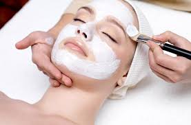
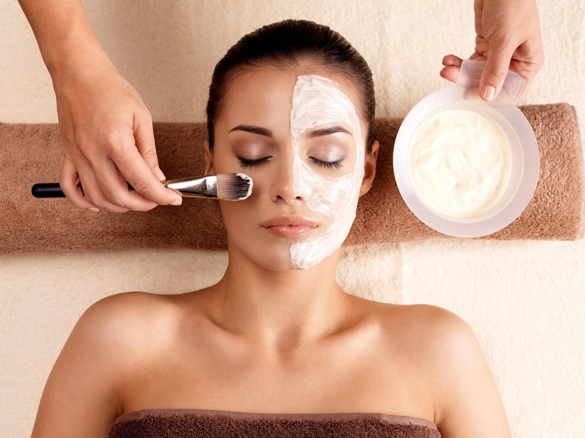

La medicina estética está viviendo un cambio de mentalidad muy claro. Hace unos años, la pregunta más habitual en consulta era "¿cómo puedo corregir esta arruga?". Hoy, cada vez más pacientes preguntan otra cosa: "¿cómo puedo cuidar mi piel para que envejezca mejor?".
Esa diferencia lo cambia todo. Ya no se trata de transformar el rostro, sino de mejorar la calidad de la piel desde dentro, estimulando sus propios mecanismos de reparación. Esto es lo que conocemos como estética bioregenerativa: tratamientos poco invasivos, con recuperación rápida y resultados progresivos que respetan tu expresión.
En este artículo repasamos las cuatro tendencias que más interés están despertando entre quienes buscan tratamientos faciales sin cirugía en Castellón: el PRP facial, la mesoterapia facial, los exosomas y el peeling químico. Te explicamos qué son, para qué sirven y en qué casos pueden ser una buena opción.
En la Clínica Médico Estética Alicia Forcada, en Almazora, cada tratamiento comienza con una valoración médica personalizada. Solo así se puede elegir el protocolo adecuado para tu tipo de piel, tus objetivos y tu momento vital.
¿Qué es la estética bioregenerativa?
La estética bioregenerativa agrupa tratamientos que buscan activar la capacidad natural de regeneración de la piel en lugar de sustituirla o "rellenarla".
En lugar de actuar únicamente sobre el síntoma (la arruga, la mancha, la flacidez), trabaja sobre la causa: una piel que, con el paso del tiempo, produce menos colágeno y elastina, retiene peor el agua y se repara con más lentitud.
Sus principales características son:
- Son tratamientos mínimamente invasivos.
- Buscan resultados graduales y naturales.
- Respetan la expresividad del rostro.
- Suelen tener una recuperación corta.
- Se adaptan a cada paciente mediante protocolos personalizados.
Por eso se ha convertido en una de las grandes tendencias en medicina estética facial.
PRP facial: la regeneración a partir de tu propio plasma
El PRP facial utiliza los factores de crecimiento de tu propio plasma para estimular la regeneración de la piel.
¿Qué es el plasma rico en plaquetas (PRP)?
El PRP, o plasma rico en plaquetas, es un tratamiento que utiliza componentes de tu propia sangre para estimular la regeneración de la piel.
A partir de una pequeña extracción, se procesa la muestra para obtener un plasma con una alta concentración de plaquetas. Estas contienen factores de crecimiento que participan en los procesos naturales de reparación de los tejidos. Después, ese plasma se aplica en la piel mediante microinyecciones.
¿Para qué se utiliza el PRP facial?
El PRP puede formar parte de protocolos orientados a mejorar:
- La luminosidad de la piel.
- La textura y la uniformidad.
- La firmeza y la elasticidad.
- El aspecto de las ojeras y la piel fina del contorno de ojos.
- Los primeros signos de envejecimiento.
Como se trata de un material autólogo (procede de la propia persona), es un tratamiento muy valorado por quienes buscan una opción natural. No obstante, cada caso debe valorarse médicamente y los resultados varían según la edad, el estado de la piel y el estilo de vida.
Mesoterapia facial: hidratar y nutrir la piel desde dentro

La mesoterapia facial aplica vitaminas, ácido hialurónico y otros activos directamente donde la piel los necesita.
¿En qué consiste la mesoterapia facial?
La mesoterapia facial consiste en la aplicación de microinyecciones superficiales de principios activos directamente en la piel. Es una técnica muy versátil, ya que la composición del tratamiento se adapta a la necesidad de cada paciente.
Entre las combinaciones más buscadas se encuentran:
- Vitaminas faciales: aportan antioxidantes y nutrientes que ayudan a recuperar el aspecto de una piel apagada o cansada.
- Mesoterapia con ácido hialurónico: contribuye a la hidratación profunda y a mejorar la elasticidad y el aspecto "jugoso" de la piel.
- Cócteles personalizados: combinaciones de activos según el objetivo (luminosidad, hidratación, calidad de la piel).
¿Y la mesoterapia transdérmica sin agujas?
Es una de las búsquedas que más ha crecido últimamente. Se trata de técnicas que buscan favorecer la penetración de activos en la piel sin utilizar agujas, mediante tecnologías como la electroporación o la radiofrecuencia.
Es una opción interesante para personas que no toleran las inyecciones. Conviene saber, eso sí, que su alcance es más superficial que el de la mesoterapia clásica, por lo que las expectativas deben ser realistas. Durante la valoración, el profesional te indicará si es una alternativa adecuada o si otra técnica se ajusta mejor a tus objetivos.
¿Cuándo es recomendable la mesoterapia facial?
Suele valorarse en casos de:
- Piel deshidratada o apagada.
- Falta de luminosidad.
- Textura irregular.
- Primeras líneas finas.
- Piel que necesita recuperarse tras el verano.
Exosomas: la nueva frontera de la medicina regenerativa
¿Qué son los exosomas?
Los exosomas son pequeñas vesículas que las células utilizan para comunicarse entre sí. Transportan proteínas, péptidos y otras moléculas de señalización implicadas en los procesos de reparación de los tejidos.
Su uso en medicina estética es una de las áreas de mayor interés y crecimiento dentro de la medicina regenerativa avanzada. Se trata de un campo en plena evolución, por lo que es importante acudir a un centro que trabaje con productos de calidad y con criterio médico.
¿Cómo se aplican?
Los exosomas suelen combinarse con técnicas como el microneedling con Dermapen, que crea microcanales temporales en la piel para facilitar la llegada de los activos. Si quieres conocer esta combinación al detalle, puedes leer nuestro artículo sobre Dermapen con exosomas en Castellón.
¿Qué busca mejorar este tratamiento?
- La luminosidad y el aspecto general de la piel.
- La textura y el aspecto de los poros.
- Las marcas superficiales, como algunas cicatrices de acné.
- El aspecto de la piel dañada por el sol.
- La recuperación cutánea tras otros procedimientos.
Los resultados son progresivos: la piel va mejorando durante las semanas posteriores a medida que se activan sus procesos naturales de regeneración.
Peeling químico: renovación celular para las manchas y la piel apagada

El peeling químico favorece la renovación celular para mejorar manchas, tono y textura, sobre todo en otoño e invierno.
¿Por qué el otoño es la mejor época para un peeling?
El peeling químico es un clásico que sigue más vigente que nunca. Su búsqueda aumenta cada otoño e invierno por un motivo muy sencillo: son los meses con menos radiación solar, lo que permite trabajar la piel con mayor seguridad.
Si además vienes de un verano intenso, es el momento ideal para reparar el daño acumulado. Puedes profundizar en las diferencias entre un tratamiento profesional y los productos de venta libre en nuestro artículo sobre peeling facial en clínica vs. exfoliantes caseros.
¿Para qué sirve un peeling químico?
Aplicado por un profesional y adaptado a cada tipo de piel, puede ayudar a mejorar:
- Las manchas en la cara (solares o superficiales).
- El tono desigual.
- La textura rugosa.
- La piel apagada y con falta de luz.
- Las marcas superficiales de acné.
Al favorecer la renovación celular, la piel recupera un aspecto más uniforme y luminoso. La elección del ácido, la concentración y el número de sesiones dependerá siempre de la valoración previa.
Comparativa: ¿qué tratamiento se adapta mejor a ti?
| Tratamiento | Qué busca | Ideal para |
|---|---|---|
| PRP facial | Estimular la regeneración con tu propio plasma | Piel apagada, primeros signos de envejecimiento, ojeras |
| Mesoterapia facial | Hidratar y nutrir con activos personalizados | Piel deshidratada, falta de luminosidad |
| Exosomas | Apoyar la regeneración celular avanzada | Mejorar calidad de la piel, textura, daño solar |
| Peeling químico | Renovar las capas superficiales | Manchas, tono desigual, textura irregular |
Esta tabla es orientativa: en muchos casos, la mejor solución es un protocolo combinado diseñado tras la valoración médica.
Beneficios de la estética bioregenerativa
Resultados naturales y progresivos
No hay cambios bruscos ni efecto "operado". La piel mejora poco a poco y tu expresión se mantiene.
Recuperación corta
La mayoría de estos tratamientos permiten retomar la rutina en poco tiempo, aunque cada uno tiene sus propias indicaciones postratamiento.
Enfoque preventivo
Cuidar la calidad de la piel desde los primeros signos de envejecimiento ayuda a que envejezca mejor a largo plazo.
Tratamientos personalizados
Ningún protocolo es igual: se diseña en función de tu piel, tu edad, tus objetivos y tu estilo de vida.
¿Para quién están indicados estos tratamientos?
Pueden ser una opción para personas que desean:
- Mejorar la calidad de la piel sin cirugía.
- Recuperar luminosidad y frescura.
- Tratar manchas o daño solar acumulado.
- Prevenir el envejecimiento cutáneo.
- Complementar otros tratamientos de medicina estética.
Como siempre, la indicación debe realizarla un profesional tras una valoración individualizada, ya que no todas las personas son candidatas a los mismos tratamientos.
¿Por qué elegir la Clínica Médico Estética Alicia Forcada?
Valoración médica personalizada
Analizamos tu piel, tu historial y tus objetivos antes de proponer ningún tratamiento.
Filosofía de naturalidad
Nuestro objetivo no es cambiar tu rostro, sino potenciar tu belleza natural respetando tu identidad.
Formación continua
La medicina estética avanza rápido. Nuestro equipo se mantiene en formación constante para ofrecer técnicas actuales y seguras.
Cercanía y confianza
Estamos en Almazora, cerca de ti, y acompañamos cada proceso con trato cercano y seguimiento profesional.
Preguntas frecuentes sobre tratamientos faciales bioregenerativos
¿Son tratamientos dolorosos?
En general son bien tolerados. Cuando es necesario, se puede aplicar anestesia tópica para aumentar el confort durante la sesión.
¿Cuándo se notan los resultados?
Depende del tratamiento. Algunos aportan luminosidad en los primeros días, mientras que la regeneración de la piel continúa mejorando durante las semanas siguientes.
¿Se pueden combinar varios tratamientos?
Sí. Muchos protocolos combinan, por ejemplo, peeling y mesoterapia, o microneedling con exosomas, siempre que el profesional lo considere adecuado.
¿Cuál es la mejor época para hacerse un peeling químico?
El otoño y el invierno, por la menor exposición solar. Después del tratamiento es imprescindible usar protección solar.
¿Cuántas sesiones necesito?
Dependerá de tu piel y tus objetivos. Tras la valoración médica se establecerá un plan personalizado.
¿Estos tratamientos sustituyen a la cirugía estética?
No. Son opciones para mejorar la calidad de la piel y prevenir su deterioro, pero no producen los mismos efectos que una intervención quirúrgica.
Solicita tu valoración personalizada
Cuidar tu piel hoy es la mejor forma de que envejezca mejor mañana. La estética bioregenerativa ofrece tratamientos poco invasivos que trabajan con los procesos naturales de tu organismo para devolverle luminosidad, uniformidad y vitalidad.
En la Clínica Médico Estética Alicia Forcada te ayudamos a encontrar el protocolo que mejor se adapta a ti. Reserva tu primera valoración y da el primer paso hacia una piel más sana, luminosa y natural.